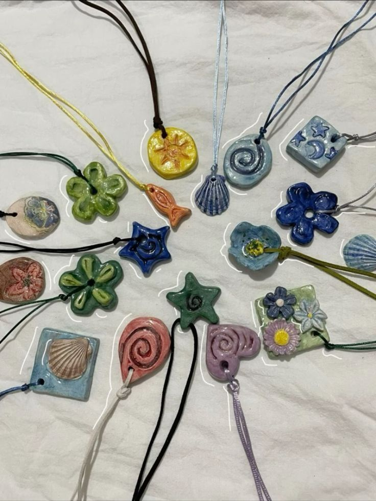
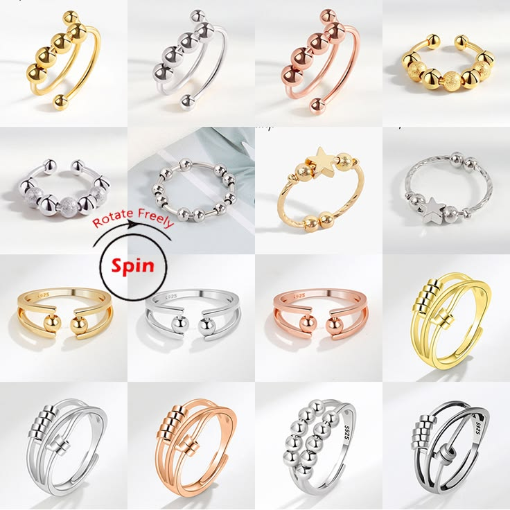
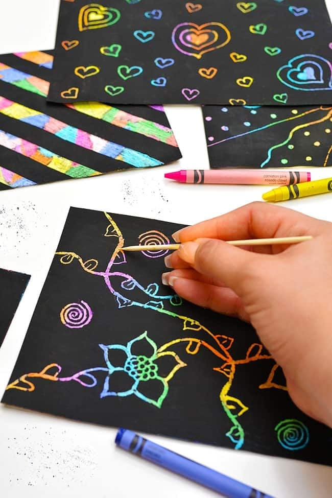
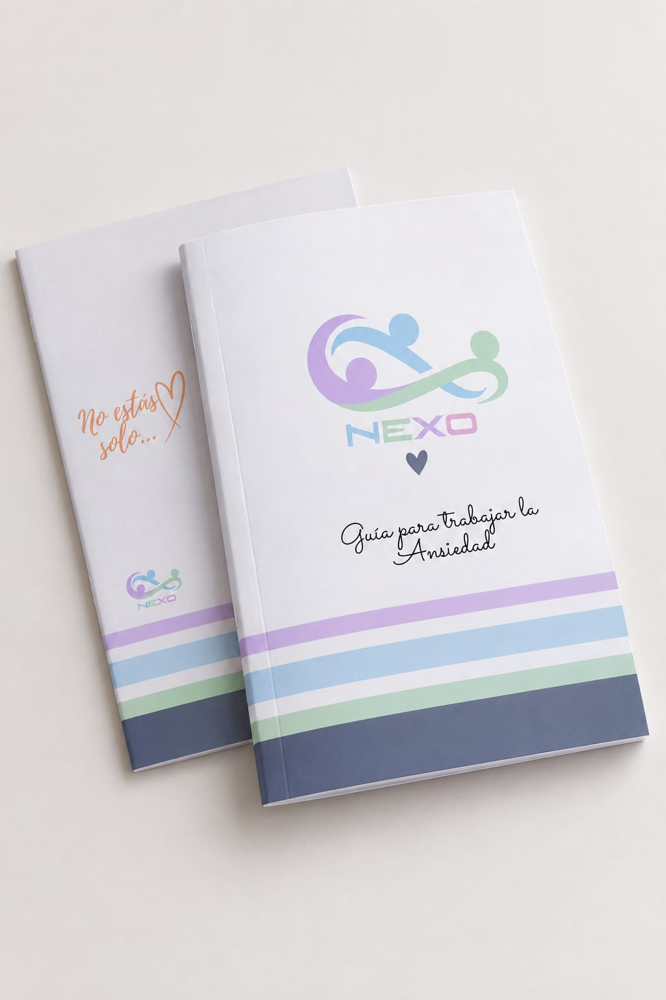
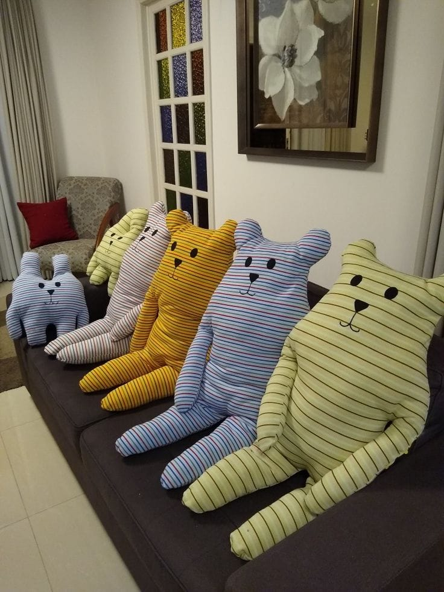
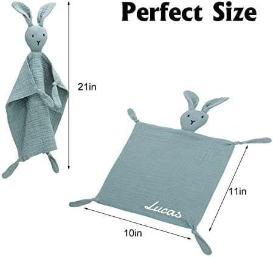
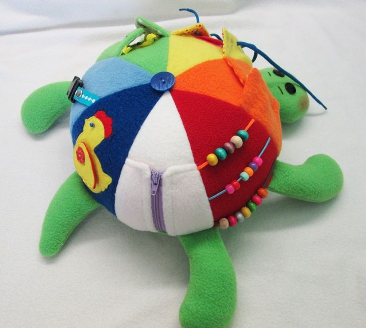
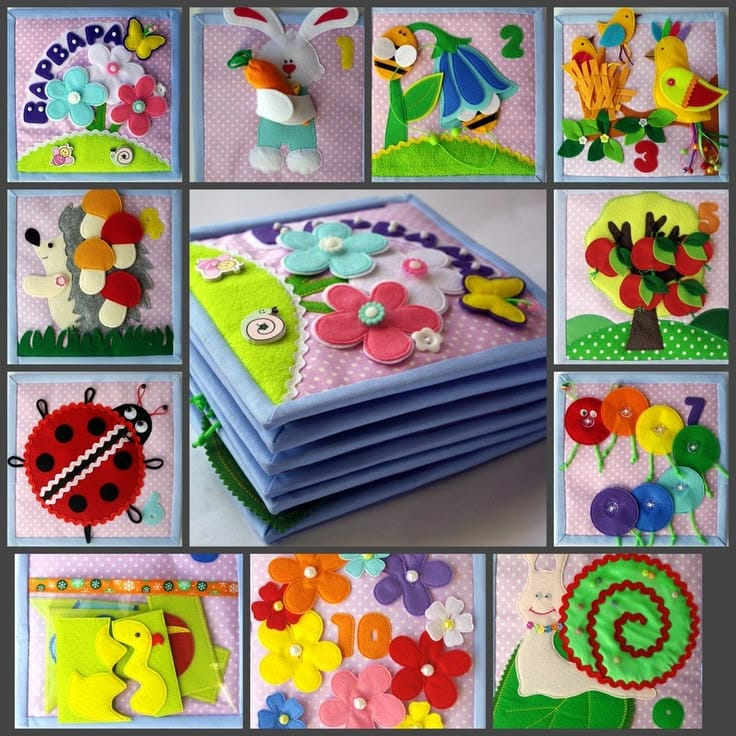

Están hechas de porcelana fría o arcilla moldeable, con pintura acrílica y barniz brillante, materiales que permiten crear diseños resistentes y fáciles de transportar. Su función es disminuir la ansiedad y el estrés mediante las texturas y estimular el sentido del tacto.

Collares y pulseras aromaterapéuticos
Están elaborados con porcelana fría, cordones ajustables y resistentes y aceites aromáticos. Poseen cavidades donde se colocan los aromas, que buscan ayudar a relajar, aliviar la ansiedad y cambiar el estado de ánimo.

Pulseras y anillos con bolitas y dijes movibles
Están hechos con acero inoxidable, abalorios y dijes de diferentes formas y colores. Su movimiento repetitivo puede ayudar a la concentración y relajación, además de ser discretos y fáciles de utilizar.

Cuadernos esgrafiados
Se realizan con cartulina, papel contact, pintura negra y herramientas de raspado, con formato A5. Permiten realizar dibujos mediante el raspado, ayudando a disminuir el estrés y la ansiedad y favoreciendo la concentración y la tranquilidad.

Agenda con focos de trabajo para la ansiedad
Está elaborada con hojas, papel fotográfico y tapa dura, y contiene 20 páginas. Sirve para expresar emociones, reducir el estrés y favorecer el bienestar mediante la escritura y la creatividad, incluyendo registros de emociones, reflexiones, planificación, respiración y dibujos.


Objetos transicionales
Son peluches o mantas elaborados con algodón, tela y felpa, de textura suave y blanda, con diseños infantiles y un aroma suave. Buscan brindar seguridad, placer y compañía, especialmente en situaciones de separación de los cuidadores.

Peluche con objetos sensoriales
Está confeccionado con relleno de algodón, fieltro y distintos elementos como cierres, botones, cordones y bolitas, buscando que sean firmes y seguros. Ayuda a calmar la ansiedad mediante el tacto y el movimiento, reducir el estrés y estimular la concentración y la atención.

Cuaderno sensorial de tela
Está confeccionado con telas suaves, fieltro, algodón y materiales seguros para niños, incorporando botones, cierres, cordones, velcro y diferentes figuras. Busca estimular los sentidos y desarrollar la coordinación ojo-mano, la concentración, la creatividad y la autonomía.